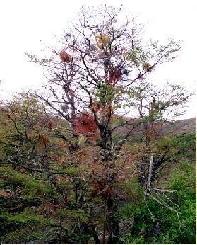

Kelc'h Marzhin Eilved Rann
Marzhin divinour
(1839: "Merlin diwinour")
1. - Marzhin, Marzhin,
(1839: "Merlin")
pelec'h it-hu

Kén beure-se gant ho ki du?
You, you, ou.
diskan
You, you, ou, you, you, ou!
You, you ou, you, ou!
2. - Bet on o kaz kavout an tu
Da gavout bremañ ar vi ruz.
diskan
3. Ar vi ruz euz an naer vorek,
War lez an aot, toull ar garreg.
4. Mont a ran da glask ar flourenn
Ar beler glas hag an aour-yeotenn.
5. Koulz hag uhelvarr an dervenn,
E-kreiz ar c'hoad,'lez ar feunteun.
6. - Marzhin, Marzhin,
(1839: "Merlin")
distroit en-dro!
Laoskit ar varr gant an dero:
7. Hag ar beler gant ar flourenn
Kenkoulz hag an aour-yeotenn.
8. Kenkoulz ha vi an naer vorek
E-touez an eon, ' toull ar garreg.
9. Marzhin, Marzhin,
(1839: "Merlin")
distroit en-dro!
N'eus divinour nemet Dou(e)!